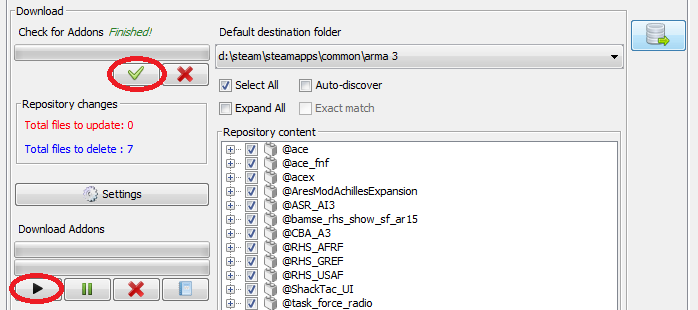

Right, on to the bit we’re all here for. This part of the guide will show you, with screenshots for clarity, how to connect to the repo and sync your files.
Note: If you’ve already got the repo details and downloaded before, and just want to update your mods, skip to the red headers.
That’s this URL, if you’re not sure: https://dl.dropboxusercontent.com/u/71674013/autoconfig
That should then fill out the rest of the fields automatically. Click OK, and the repo will be added.
Arma3Sync might do this automatically. If it does, then happy days.
It may take a while to check all the files. Have patience.
This will begin downloading the files. The download may falter occasionally; if this happens just start it again and it will pick up where it left off. If you thought checking took a while, you’re in for a treat. Have much more patience.
You’re done. To actually play with the files, you’ll need to add them to groups and select them. The next page can help with that. Click the cross that’s on its tab to disconnect from the repo.